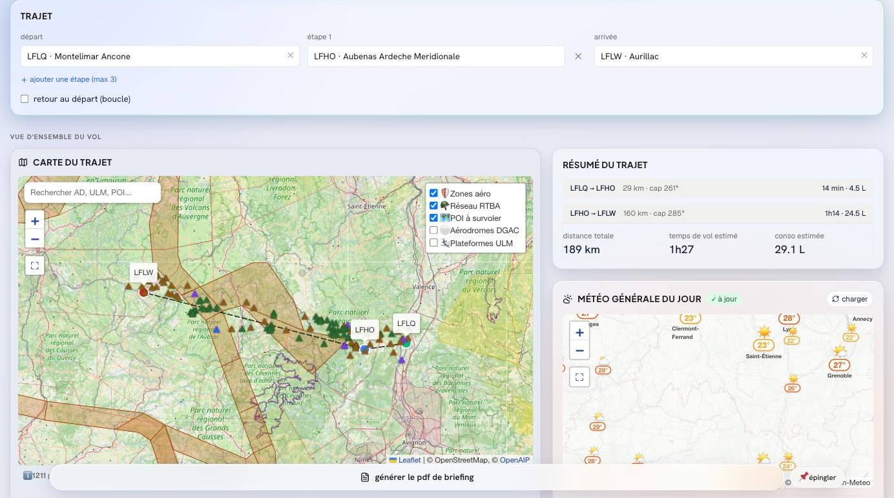
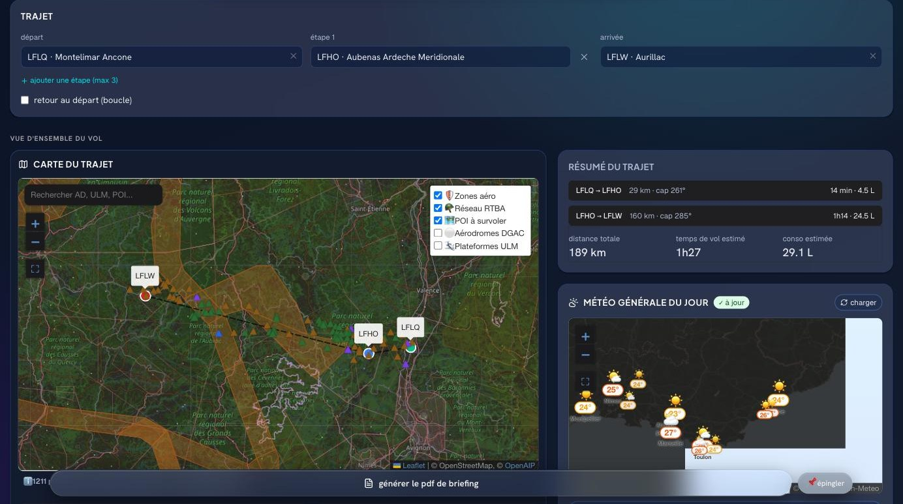
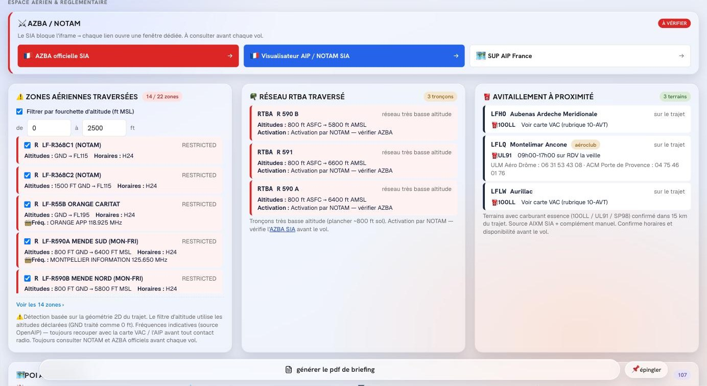
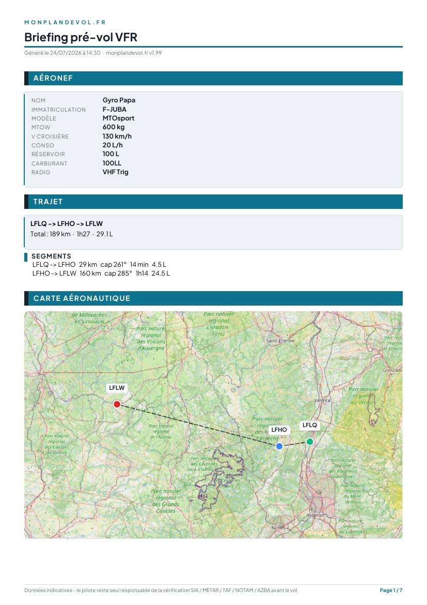
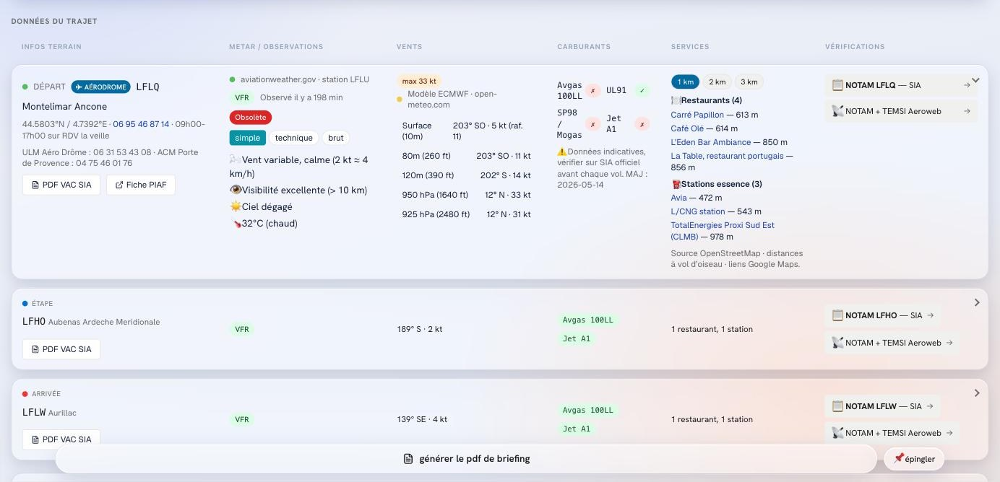
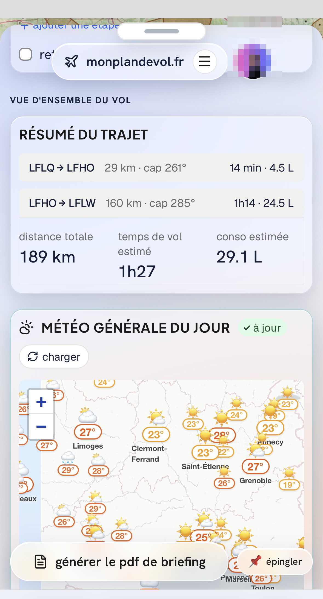
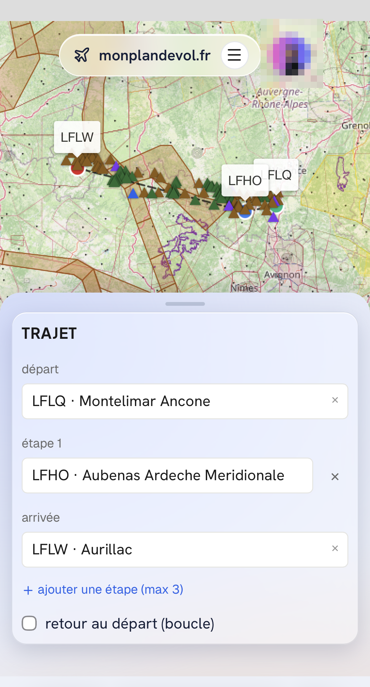

Touchez l'image pour zoomer · pincez pour ajuster · Échap ou × pour fermer
monplandevol.fr rassemble sur un seul écran tout ce qu'un pilote VFR cherche avant de partir : météo, espaces aériens, RTBA, NOTAM, logistique des terrains — et les points d'intérêt au sol qui valent le détour. Préparation au sol, du pilote au pilote.
Application web (PWA) — rien à installer, fonctionne sur Mac, PC, iPhone et Android. Compte gratuit requis.


Fini les six onglets ouverts avant chaque vol : sécurité, logistique du voyage et curiosités du trajet — agrégées, décodées et posées sur la carte.
METAR et TAF des terrains proches, vent par altitude, tendance sur votre créneau. Les données brutes, décodées, sans détour.
Les zones qui concernent votre vol, avec leurs fréquences, directement sur la carte. CTR, TMA, R, D, P : vous savez où vous mettez les pales.
Le réseau très basse altitude défense tracé sur votre carte, mis à jour à chaque cycle AIRAC. L'activation du jour se vérifie sur l'AZBA officielle, accessible en un lien.
Pour chaque terrain du vol : METAR décodé, vents par altitude, carburants disponibles et services sur place. La logistique du voyage, pas seulement la météo.
Les terrains avec carburant autour de votre route, grades disponibles, données mises à jour chaque semaine.
Avec les paramètres de votre machine, le temps de vol et la consommation sont dégrossis sur l'ensemble du trajet. Un ordre de grandeur pour caler vos escales — votre devis de carburant reste le vôtre.
Châteaux, viaducs, villages, sommets, lacs : les curiosités qui méritent un survol, le long de votre route et autour du terrain d'arrivée — pas seulement dans la région que vous connaissez déjà.
Les liens vers les publications officielles — cartes VAC, NOTAM du SIA, AZBA, Météo-France — rangés au bon endroit, à côté du terrain concerné. Vous consultez la source, pas une copie.
Votre synthèse de préparation exportée en un clic, à archiver ou à emporter. Préparée au sol, pour le sol.
Montélimar → Aubenas → Aurillac : zones traversées, réseau RTBA, terrains d'avitaillement et fiches terrain complètes.





monplandevol.fr n'est ni un GPS, ni un outil de navigation, ni un système certifié. Il vous aide à préparer votre vol — la décision et la conduite du vol restent au commandant de bord, avec les publications officielles (AIP, VAC, NOTAM, AZBA) comme seules références. C'est écrit dans nos CGU, et on préfère aussi l'écrire ici.
Sur les points d'intérêt, la prudence est de mise. Regarder en bas ne doit jamais faire baisser l'attention nécessaire au « voir et éviter ». Les curiosités se repèrent au sol, pendant la préparation — pas en cherchant sur un écran une fois en l'air.
Les données à portée de sécurité — météo, zones, fréquences, avitaillement du vol préparé — ne sont jamais limitées.
Prix TTC — TVA non applicable, art. 293 B du CGI. Paiement sécurisé Stripe. Abonnement à reconduction tacite, résiliable en deux clics depuis l'app.
Non. monplandevol.fr est une application web (PWA) : elle s'ouvre dans votre navigateur et peut s'ajouter à l'écran d'accueil de votre téléphone en deux gestes. Aucun store, aucune mise à jour manuelle.
Vos vols, votre profil aéronef et vos préférences sont synchronisés de façon sécurisée. Sans compte, impossible de vous les restituer d'un appareil à l'autre.
Non, et c'est volontaire. L'outil est conçu pour la préparation au sol uniquement. En vol, fiez-vous à vos instruments et aux documents officiels.
Non, et ce n'est pas le but. monplandevol.fr intervient en amont : vous rassemblez et décidez au sol, puis vous reportez votre route dans votre logiciel de navigation habituel sur tablette ou téléphone. Les deux outils ne font pas le même métier.
Les curiosités au sol qui méritent un survol ou une approche : châteaux, viaducs, villages, sommets, lacs. On connaît en général celles de sa région de départ — beaucoup moins celles du terrain de destination ou du trajet. Elles se repèrent au sol, pendant la préparation : en vol, la priorité reste le « voir et éviter ».
De sources reconnues : SIA/DGAC, OpenAIP, BASULM (FFPLUM), METAR/TAF des réseaux d'observation, Open-Meteo, OpenStreetMap. Elles sont indicatives : les publications officielles restent votre référence.
Depuis l'onglet Compte, en deux clics, via le portail sécurisé Stripe. L'accès Pro reste actif jusqu'à la fin de la période payée.
Non. Voir notre politique de confidentialité — pas de publicité, pas de revente de données.